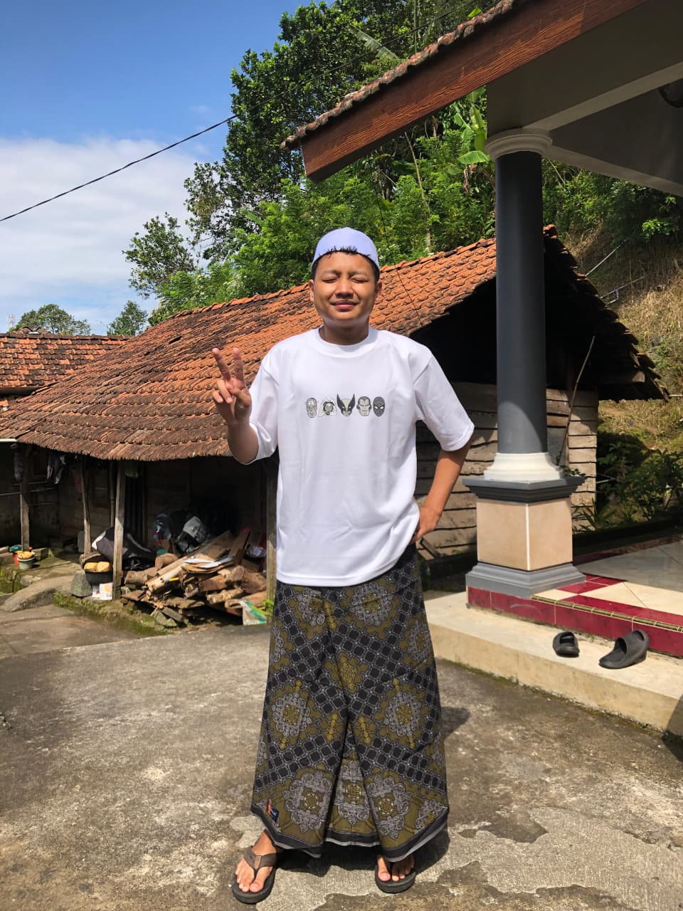
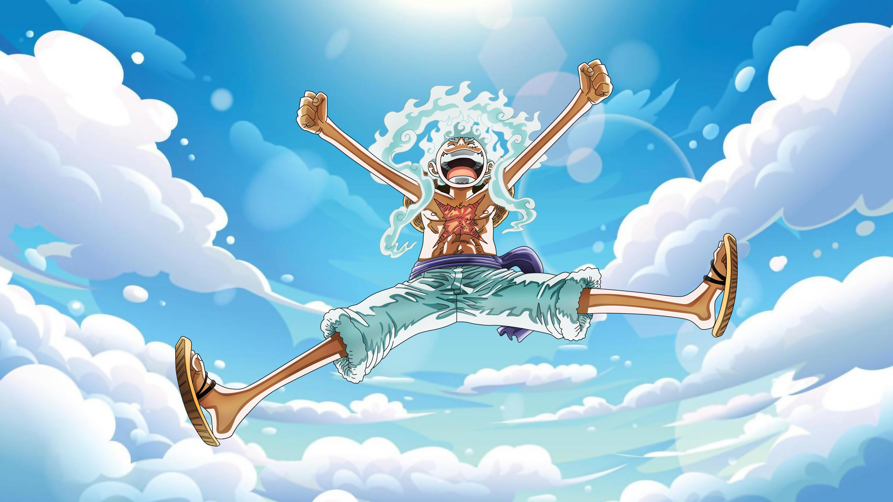
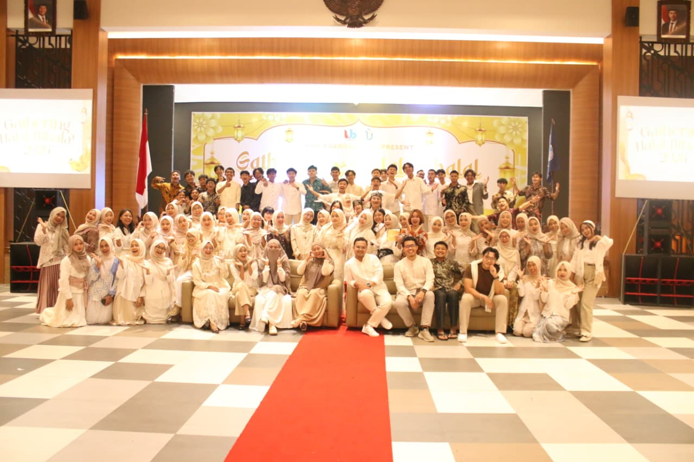
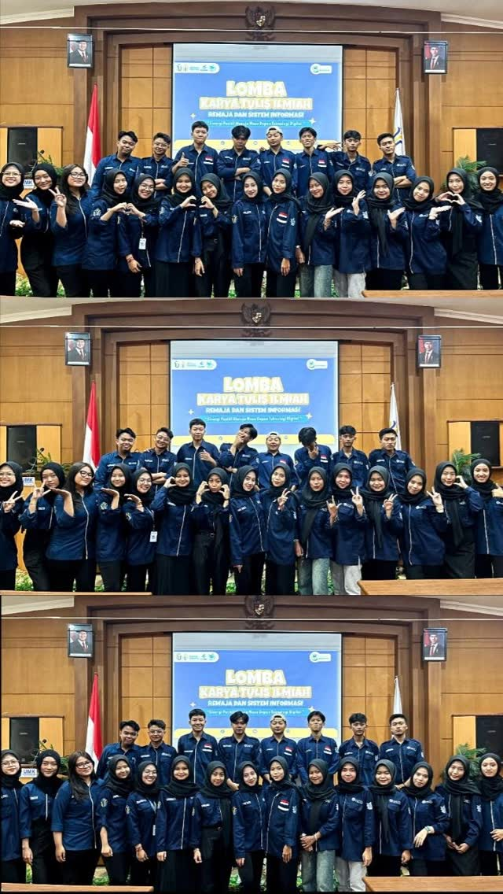
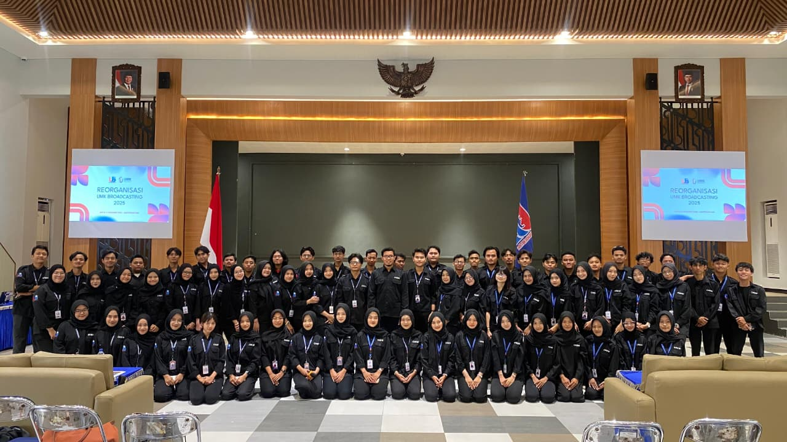
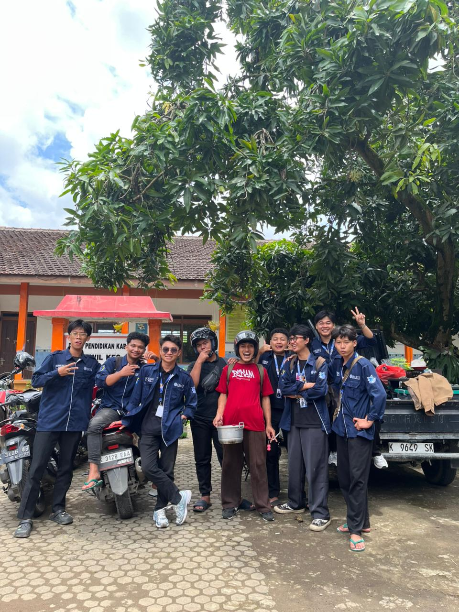
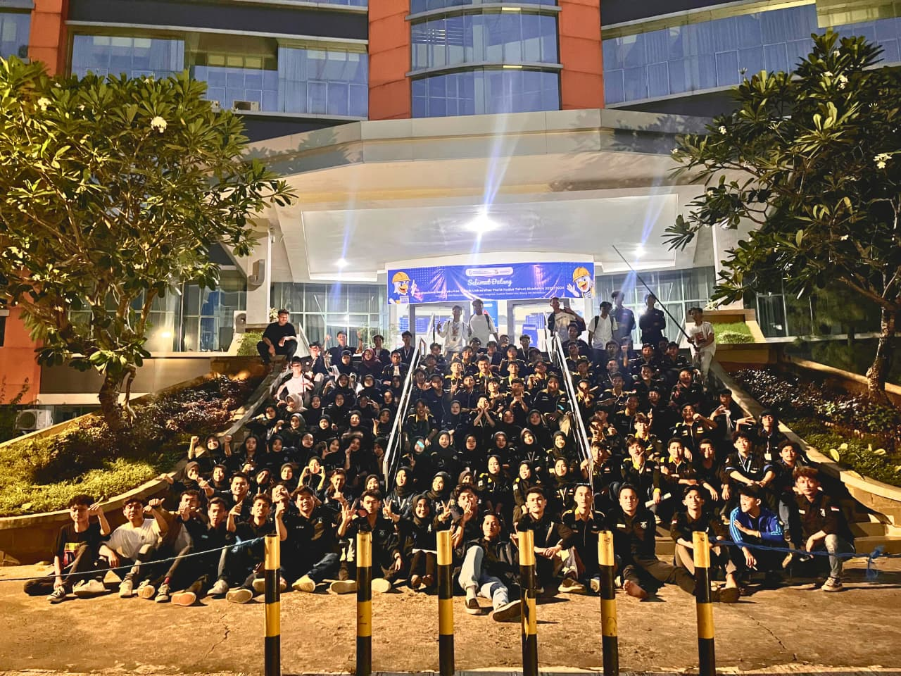
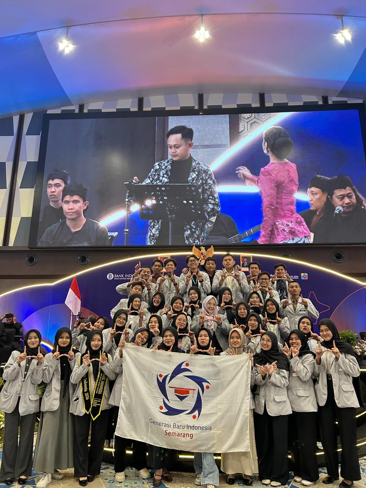
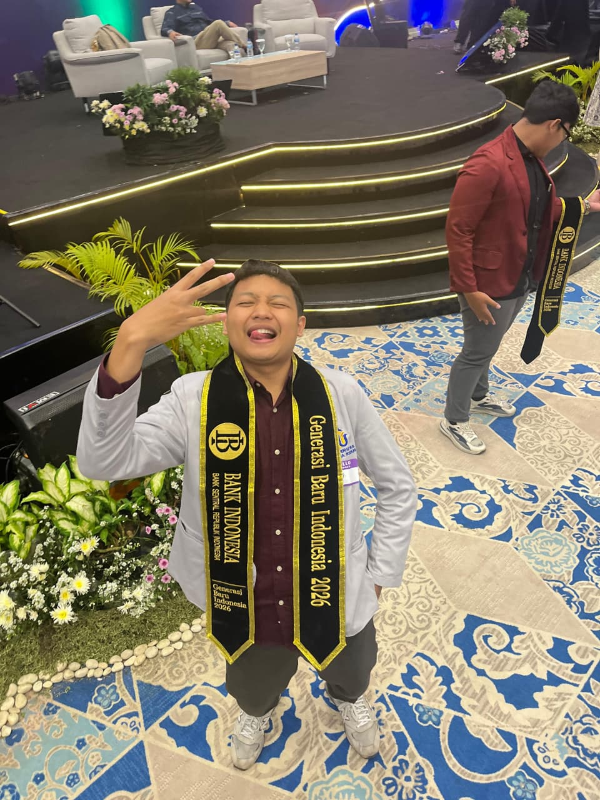

An active Information Systems student combining professional diligence from corporate internships at PT. Bank Rakyat Indonesia with active public speaking roles and organization leadership. Passionate about systems analysis, dynamic collaboration, and creative problem solving.


Hover for Creative Vision ☀️
PT. Bank Rakyat Indonesia (Persero) Tbk. | Kudus Branch
Mempelajari ekosistem administrasi perbankan profesional, mengurus manajemen validasi dokumen kredit nasabah, dan mendukung efisiensi alur administrasi kantor unit. Melatih disiplin tinggi, ketelitian kerja, dan kepatuhan terhadap SOP operasional perbankan BUMN.
Colo Village Office | 3 Months
Bertanggung jawab dalam pengelolaan data profil desa dan sistem kelurahan (Prodeskel). Melakukan input, pembaruan, dan validasi data kependudukan serta potensi wilayah Desa Colo untuk laporan terpadu ke tingkat kecamatan.
Kudus (Gunung Muria Area)
Pengalaman berharga melayani transportasi lokal di daerah pegunungan Muria yang menantang. Mengasah navigasi wilayah, pemahaman rute ekstrem, komunikasi antarmasyarakat lokal dan wisatawan ziarah, serta melatih ketahanan fisik, kerja keras, dan kemandirian finansial.

ChairmanMemimpin kepanitiaan acara temu kangen dan sharing alumni UMK Broadcasting. Bertanggung jawab atas koordinasi divisi, penyusunan agenda acara, dan memastikan silaturahmi antargenerasi berjalan lancar dan sukses.

Chief OrganizerKetua pelaksana event kompetisi akademis sekolah Lasis yang dinaungi oleh HIMASI. Mengoordinasikan seluruh panitia mulai dari perancangan soal, publikasi, pendaftaran peserta, hingga eksekusi acara hari H.

HRD Member (2026)Sebagai bagian dari divisi Human Resource Development (HRD). Berfokus pada pengembangan kualitas internal anggota ukm, mengadakan screening, evaluasi berkala, serta menyusun program upgrading anggota.

External RelationsAktif sebagai staf divisi hubungan luar. Menghubungkan himpunan mahasiswa dengan instansi luar, universitas lain, serta menginisiasi kolaborasi program kerja kunjungan industri maupun studi banding.

Active MemberTerlibat aktif dalam berbagai kegiatan organisasi mahasiswa (Ormawa) di lingkup Fakultas Teknik UMK. Mengawal isu akademis, berpartisipasi dalam event olahraga dan pengabdian masyarakat fakultas.
Menjadi talent utama dan tim promosi program studi Sistem Informasi UMK. Membuat konten kreatif seputar perkuliahan, tips teknologi, dan mempromosikan prodi melalui platform sosial media Instagram & TikTok.
Terpilih menjadi salah satu penerima beasiswa prestasi eksklusif dari Bank Indonesia Kantor Perwakilan Solo tahun 2026. Aktif berkontribusi dalam komunitas penerima beasiswa (GenBI) untuk menyelenggarakan program edukasi kebijakan Bank Indonesia, sosialisasi QRIS/Rupiah, serta berbagai aksi sosial kemasyarakatan.


Ahli dalam memandu event formal maupun non-formal. Memiliki karisma berbicara di atas panggung, mengelola audiens dengan baik, serta menguasai teknik vokal yang artikulatif dan fleksibel.
Featured StrengthTercermin dari rekam jejak memimpin kepanitiaan penting (Broadcasting Gathering & Lomba Akademisi). Mampu membimbing tim, mendelegasikan tugas secara adil, dan menyelesaikan konflik dengan kepala dingin.
ManagementMengombinasikan logika sistem informasi dengan pengalaman organisasi taktis. Cepat memetakan masalah operasional di lapangan dan merancang solusi alternatif yang efektif dan efisien.
AnalyticalDaftar dokumentasi panggung formal dan non-formal pilihan